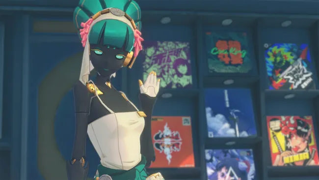
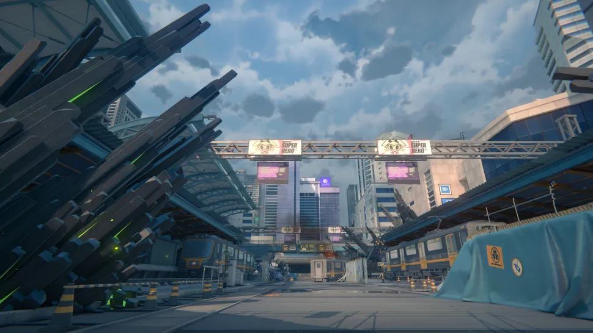

Sau thành công của Genshin Impact và Honkai Star Rail, HoYoverse sẽ mang đến một dạng mới của trò chơi nhập vai hành động trong Zenless Zone Zero.
(Hình ảnh được ghi nhận từ HoYoverse)
Zenless Zone Zero là một trò chơi nhập vai hành động lấy cảm hứng từ anime sắp ra mắt được phát triển bởi HoYoverse, hãng studio nổi tiếng với Genshin Impact và Honkai: Star Rail. Trong Zenless Zone Zero, người chơi sẽ đảm nhận vai trò của một Proxy khám phá vào các vũ trụ song song được biết đến là The Hollows. Những vùng đất lạ này không hẳn là an toàn (không có gì ngạc nhiên), nhưng may mắn thay, Proxy sẽ nhận được sự giúp đỡ từ một dàn nhân vật đa màu sắc, bao gồm cả Anby bí ẩn và Nicole tài ba.
Từ ngày phát hành tiềm năng của Zenless Zone Zero đến mỗi nhân vật được công bố cho đến nay, đây là những gì chúng ta biết về trò chơi “ZZZ” của HoYoverse, và tại sao nó là một trong những trò chơi PC sắp tới mà bạn nên chú ý theo dõi kỹ lưỡng.
HoYoverse vẫn chưa thông báo ngày phát hành chính thức của Zenless Zone Zero. Tuy nhiên, sau khi trò chơi được tiết lộ vào tháng 5 năm 2022, nhà phát triển đã tổ chức hai phiên bản thử nghiệm beta đóng để nhận phản hồi từ cộng đồng về trò chơi nhập vai hành động sắp tới này, với phiên beta mới nhất diễn ra vào cuối năm 2023.
(Hình ảnh được ghi nhận từ HoYoverse)
Để đoán ngày phát hành của Zenless Zone Zero, chúng ta nên xem xét các game trước đó của HoYoverse: Genshin Impact được phát hành hơn một năm sau khi công bố lần đầu, và Honkai: Star Rail được phát hành hai năm sau khi thông báo ban đầu. Hơn nữa, Genshin Impact được phát hành khoảng nửa năm sau phiên beta thử nghiệm thứ hai, trong khi Honkai: Star Rail mất khoảng một năm. Với việc Zenless Zone Zero được tiết lộ vào tháng 5 năm 2022 và có phiên beta thứ hai vào tháng 11 năm 2023, chúng ta có thể kỳ vọng ngày phát hành Zenless Zone Zero sẽ từ tháng 4 đến tháng 12 năm 2024.
(Hình ảnh được ghi nhận từ HoYoverse)
Trong khi miHoYo đã đạt được thành công lớn với Genshin Impact trên PS4 và PS5, có vẻ như hãng studio này đang tập trung chặt chẽ hơn với trò chơi nhập vai hành động mới của mình. Các nền tảng đã xác nhận cho Zenless Zone Zero bao gồm PC, Android và iOS, và HoYoverse vẫn chưa thông báo liệu trò chơi sẽ cuối cùng có trên console hay không. Như đã xác nhận trong phiên beta thử nghiệm đóng thứ hai, dữ liệu của Zenless Zone Zero được chia sẻ giữa tất cả các nền tảng, vì vậy bạn có thể tiếp tục chơi trên điện thoại di động sau khi đã đăng xuất trên PC, và ngược lại.
(Hình ảnh được ghi nhận từ HoYoverse)
Trong Zenless Zone Zero, bạn sẽ khám phá những bí ẩn đằng sau thế giới được biết đến là New Eridu, nơi cuối cùng còn lại của nền văn minh đô thị. Phần còn lại của thế giới đã bị hủy hoại bởi một thảm họa siêu nhiên được gọi là Hollows; những cánh cổng dường như xuất hiện từ hư không, mở ra những chiều không gian vặn vẹo đầy quái vật huyền bí.
Nhân dân của New Eridu đã sống sót bằng cách khai thác tài nguyên từ Hollows. Kể từ đó, Hollows đã trở thành một phần công nghiệp hóa và tiền hóa dưới sự quản lý của thành phố, dẫn đến sự cạnh tranh giữa các công ty, băng đảng và những người cuồng tín. Tuy nhiên, để khám phá Hollows, bạn cần một hướng dẫn chuyên nghiệp được biết đến là Proxy.
Và đoán xem? Bạn, người chơi, lại chính là một Proxy như vậy. Bạn sẽ hợp tác với các nhóm khám phá khác nhau, mỗi nhóm đều có lý do riêng để nhập vào những chiều không gian hỗn loạn. Một khi đã ở trong đó, bạn sẽ chiến đấu với quái vật, giúp nhà tuyển dụng của bạn hoàn thành mục tiêu của họ và tìm hiểu thêm về câu chuyện của họ.
(Hình ảnh được ghi nhận từ HoYoverse)
Một trong những địa điểm quan trọng nhất trong Zenless Zone Zero là thành phố lớn, New Eridu. Nó được miêu tả như một “thành phố đa sắc màu” là nơi ẩn náu của người tị nạn và người sống sót sau thảm họa. Thành phố đầy rẫy băng đảng, Hollow Raiders, những người “điên điên”, âm mưu gia… Và Hollows.
Thật vậy, Hollows chính là nguyên nhân gây ra khủng hoảng, nhưng đừng lo; ở New Eridu, Hollows được sử dụng cho mục đích công nghiệp. Đó chẳng qua chỉ là những máy làm tiền từ các chiều không gian nhỏ khác, nói một cách đơn giản. Ether được chiết xuất từ Hollows mang đến cho New Eridu sức mạnh ma thuật đặc biệt của nó. Bên trong những không gian cầu kỳ và cầu vồng này, chúng ta sẽ tìm thấy quái vật, lũ côn đồ, Proxies, các cơ quan, Hollow Raiders và… Đúng, nghe có vẻ như một nửa thành phố.
(Hình ảnh được ghi nhận từ HoYoverse)
Kết hợp hành động thời gian thực với cơ chế chiến đấu theo phong cách roguelike, gameplay của Zenless Zone Zero khá khác biệt so với các tựa game khác của HoYoverse. Trong khi theo dõi cốt truyện qua các nhiệm vụ chính và phụ khác nhau, người chơi cần chiến đấu để tiến qua các vùng đất bí ẩn được gọi là The Hollows. Hệ thống Hollow Deep Dive, còn được gọi là The Board, hiển thị các tuyến đường tiềm năng qua The Hollows trên một bản đồ lớn chia thành các ô lớn (xem hình ảnh phía trên). Đây là nơi mà cơ chế roguelike xuất hiện; mỗi ô bạn bước chân vào sẽ có hiệu ứng khác nhau – một số không làm gì cả, số khác chứa đựng phần thưởng, số khác là một “bài toán” cần được giải quyết trước khi bạn có thể tiến lên, và một số sẽ bắt đầu một trận chiến.
Xây dựng nhân vật và thành phần đội ngũ chơi vai trò quan trọng trong chiến đấu của Zenless Zone Zero, khi bạn sẽ chiến đấu với một đội ba nhân vật có thể chơi, luôn thay đổi vị trí. Mỗi nhân vật sẽ sử dụng các đòn tấn công cơ bản, đòn tấn công đặc biệt (đòn tấn công mạnh mẽ hơn khi bạn tích luỹ Năng lượng), các đòn tấn công chuỗi (kích hoạt sau khi đánh trúng một kẻ địch bị choáng bằng đòn tấn công đặc biệt), đòn tấn công trượt (né tránh và tấn công cùng lúc), và những đòn tấn công cuối cùng siêu mạnh mẽ. Bằng cách chuyển đổi nhân vật trong đội của bạn, bạn cũng có thể thực hiện các đòn tấn công hỗ trợ.
Zenless Zone Zero không phải là một trò chơi thế giới mở, nhưng bạn sẽ có thể khám phá bản đồ thành phố New Eridu bên ngoài The Hollows. Mặc dù việc khám phá hoàn toàn miễn phí, nhiều hoạt động chiến đấu liên quan đến hệ thống năng lượng, với năng lượng tái tạo theo thời gian. Nếu bạn muốn có thêm nhân vật và vũ khí, bạn sẽ phải sử dụng hệ thống gacha của Zenless Zone Zero.
(Hình ảnh được ghi nhận từ HoYoverse)
Trong khi Hoyoverse vẫn chưa nêu rõ đầy đủ về các phe phái trong thế giới này, họ đã tiết lộ năm phe đầu tiên. Đây là một cái nhìn tổng quan về các phe phái trong Zenless Zone Zero mà chúng ta đã biết đến cho đến nay:
– Gentle House, hay còn gọi là Cunning Hares: “luôn sẵn lòng với giá phải chăng”. Một cơ quan làm công việc đặc biệt do cô gái tóc hồng Nicole Demara đứng đầu. Thuê họ để cứu mèo của bạn hoặc nhảy đầu vào The Hollows – bạn nói điều gì, họ đều làm.
– Belobog Heavy Industries. Một phe phái nổi tiếng với sự bền bỉ của họ, họ nắm giữ bằng sáng chế cho “máy móc nặng chuyên biệt” được sử dụng trong The Hollows. Thú vị thay, thành phố lớn trên hành tinh Jarilo-VI, một hành tinh trong Honkai: Star Rail, cũng được gọi là Belobog. Ai sẵn sàng cho đa vũ trụ?
– Faction Unknown. Phe phái này vẫn chưa được mô tả chi tiết, nhưng chúng ta biết rằng Soldier 11 nằm trong hàng ngũ của họ.
– Victoria Housekeeping. Mặc trang phục người giúp việc và quản gia, các thành viên của Victoria Housekeeping Co. nổi tiếng với dịch vụ chất lượng cao giống như nền văn minh cũ. Chưa rõ liệu họ đến đây để làm sạch thực sự hay để chiến đấu với quỷ – có thể họ có thể làm cả hai.
– Section 6. Phe phái cuối cùng là một phân đoạn của “Hollow Special Operations”, dường như là một tổ chức chính thức hơn so với các phe phái khác trong Zenless Zone Zero.
HoYoverse đã tiết lộ 15 nhân vật đầu tiên xuất hiện trong Zenless Zone Zero. Các nhân vật đã được công bố trong Zenless Zone Zero gồm:
Ngày đăng: 25/11/2023